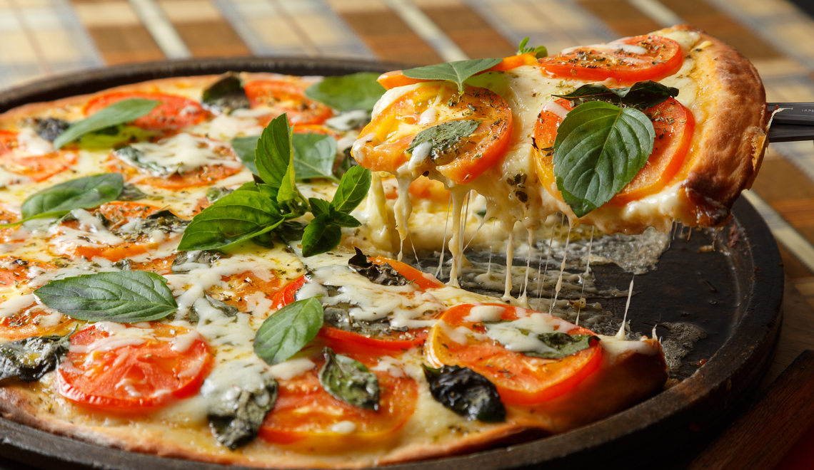

Favorite Foods
-
Pizza
 -
Tacos

-
Feijoada

Feijoada is a traditional Brazilian dish that is a favorite among locals and
tourists alike. Typically made with black beans, various cuts of pork, and
spices, resulting in a flavorful and satisfying meal. It's often served with
rice, farofa (toasted manioc flour), and orange slices to balance out the
richness of the dish. Feijoada is more than just a meal, it's a cultural experience.